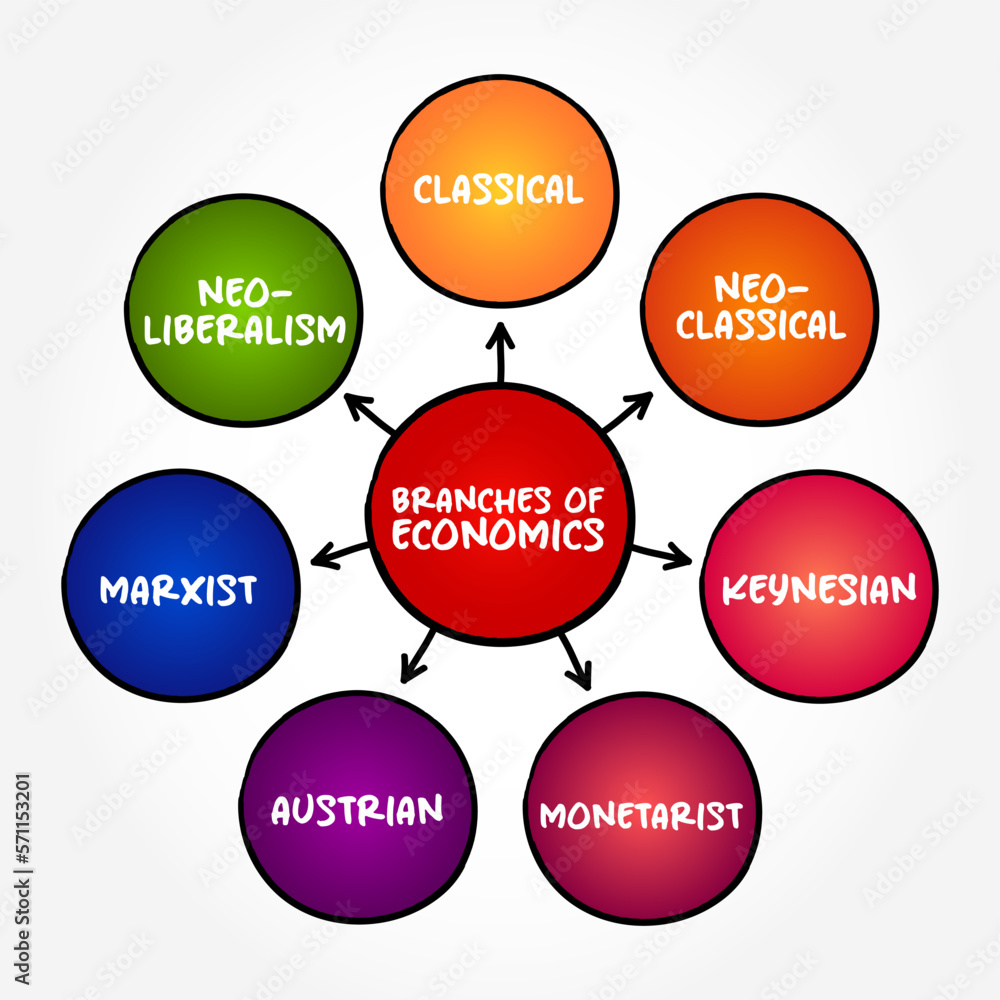
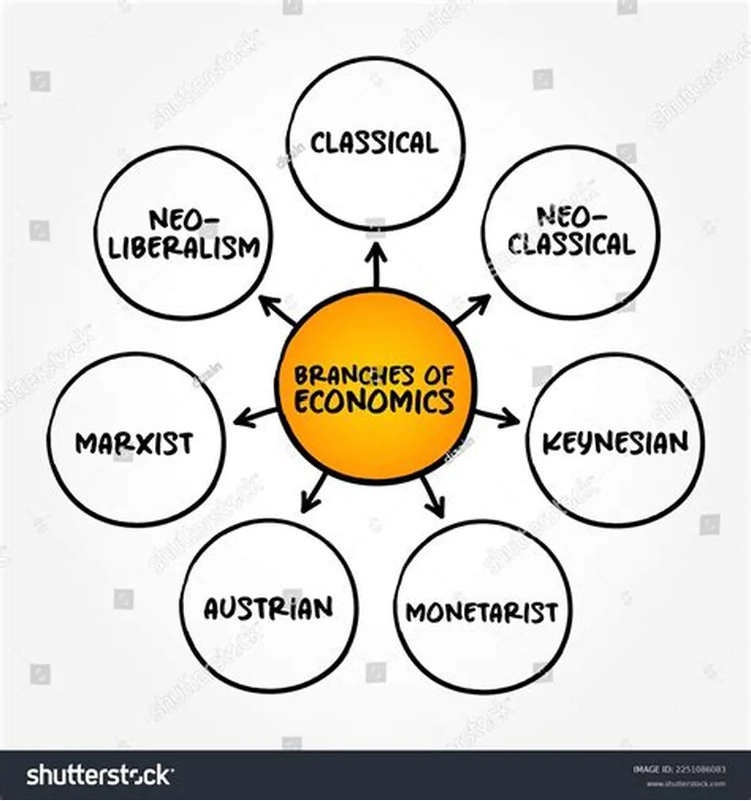
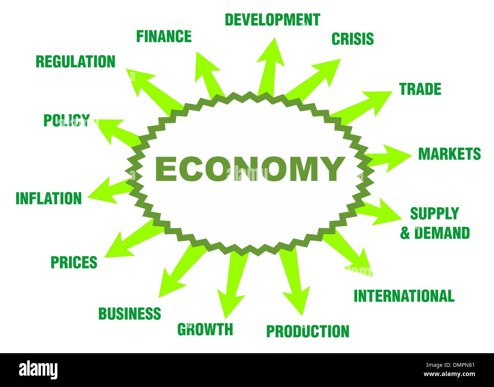

Examining individual agents and markets, their interactions, and the outcomes of interactions.
Macroeconomics is a field of study that examines the behavior of an economy, including markets, businesses, consumers, and governments. It examines economy-wide phenomena such as inflation, price levels, the rate of economic growth, national income, gross domestic product (GDP), and changes in unemployment.
1. Supply and demand
2. Scarcity
3. Opportunity cost
4. Time value of money
5. Purchasing power
It is one of the basic economic concepts and theories. Supply and demand can be seen everywhere in our daily life. To understand this concept more clearly, let's take a common example like food products. If we take food and drinks, they need to travel from the farmer to the consumer with multiple mediators. So, the price may vary. The price of a particular product depends upon the supply and demand of that product.
This is also the basic concept of economics, which also acts as a factor of demand and supply. Because the supply doesn't meet the demand, then the condition is termed as a scarcity of that particular utility, whether it is food or product or money or any other.
It is one of the 5 basic concepts of economics. It is like a trade-off market. It is also termed as an exchange policy like if we want something we need to give others in the form of cash or product or whatever it is. We are creating an opportunity to sell our goods in return for getting our requirements.
It is one of the important concepts in economics because the value of money may vary from time to time based on different factors. It refers to utility that is derived from every money a consumer spends.
Another fundamental economic concept is the purchasing power of consumers because if we take gold as an example, even though the price of gold is reduced, the buyer may not have the ability to purchase food at that particular time. If he can purchase some amount of gold, the price may increase. That ability of the consumer is called the purchasing power.


